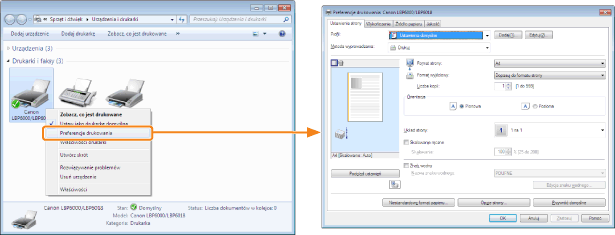

Na ekranie ustawień sterownika drukarki można określić różne preferencje drukowania.
Istnieją następujące metody wyświetlania ekranu ustawień.
Wyświetlanie z aplikacji
Określone ustawienia odnoszą się jedynie do danych drukowania z tej samej aplikacji. Wyjście z aplikacji resetuje zmienione ustawienia i przywraca ustawienia domyślne.
|
Jak wyświetlić
(Procedura może się różnić w zależności od aplikacji.)
|
Wyświetlanie z folderu drukarki ( "Podstawowa obsługa/Różne informacje dla systemu Windows")
"Podstawowa obsługa/Różne informacje dla systemu Windows")
"Podstawowa obsługa/Różne informacje dla systemu Windows")<Ekran preferencji drukowania>
Można zmienić wartości domyślne dla preferencji drukowania odnośnie do wszystkich danych.
|
Jak wyświetlić
Kliknij ikonę drukarki prawym przyciskiem myszy, a następnie z menu podręcznego wybierz [Preferencje drukowania].
|

<Ekran właściwości drukarki>
Można określić ustawienia dodawania profili do serwera itd.
|
Jak wyświetlić
Kliknij prawym przyciskiem myszy ikonę drukarki, a następnie z menu podręcznego wybierz polecenie [Właściwości drukarki] lub [Właściwości].
|
|
UWAGA
|
|
Więcej informacji na temat ustawień
Zobacz Pomoc.
Informacje na temat zakładek wyświetlanych w systemie Windows
Następujące zakładki wyświetlane są przez system Windows. Więcej informacji na ten temat znajdziesz w Pomocy systemu Windows.
Zakładka [Ogólne]
Zakładka [Udostępnianie]
Zakładka [Porty]
Zakładka [Zaawansowane]
Zakładka [Zarządzanie kolorami]
Zakładka [Zabezpieczenia]
Informacje na temat sterownika drukarki
Funkcje sterownika drukarki mogą ulec zmianie w wyniku aktualizacji.
|